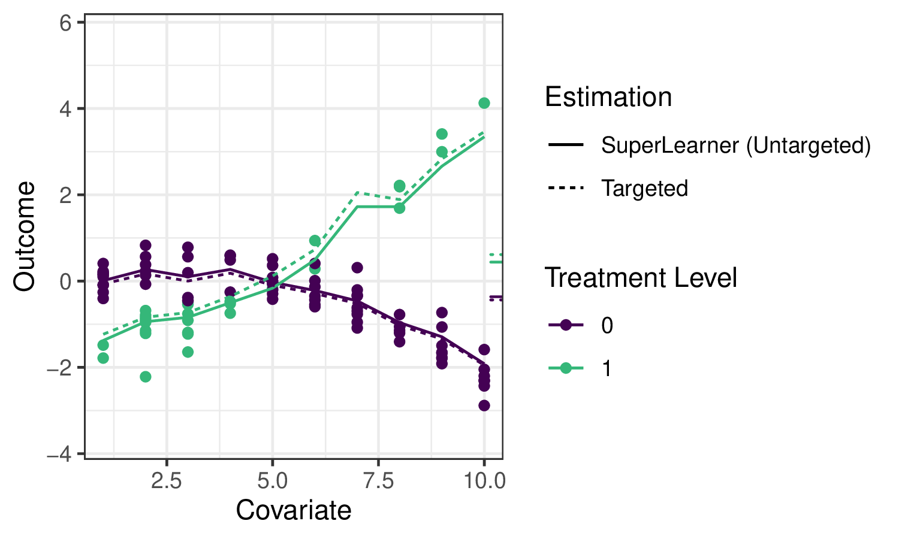

8 TMLE 프레임워크
Jeremy Coyle
tmle3 R 패키지를 바탕으로 합니다.
Note학습 목표
이 장을 마치면 여러분은 다음을 할 수 있게 됩니다.
- 효과 추정을 위해 왜 TMLE를 사용하는지 이해합니다.
tmle3를 사용하여 평균 치료 효과(ATE)를 추정합니다.tmle3“Specs” 객체 사용법을 이해합니다.- 사용자 정의 타겟 파라미터 세트에 대해
tmle3를 적합시킵니다. - 델타 방법(delta method)을 사용하여 타겟 파라미터의 변환을 추정합니다.
8.1 소개
sl3에 관한 이전 장에서 데이터로부터 \(\mathbb{E}[Y \mid X]\)와 같은 회귀 함수를 추정하는 방법을 배웠습니다. 그것은 데이터로부터 배우는 중요한 첫 번째 단계이지만, 이 예측 모델을 사용하여 통계적 및 인과적 효과를 어떻게 추정할 수 있을까요?
타겟 러닝을 위한 로드맵으로 돌아가서, 치료 변수 \(A\)가 결과 \(Y\)에 미치는 효과를 추정하고 싶다고 가정해 봅시다. 논의한 바와 같이, 그 효과를 특성화하는 하나의 잠재적 파라미터는 평균 치료 효과(ATE)이며, 이는 \(\psi_0 = \mathbb{E}_W[\mathbb{E}[Y \mid A=1,W] - \mathbb{E}[Y \mid A=0,W]]\)로 정의됩니다. 또한 공변량 \(W\)의 분포에 대해 평균을 냈을 때 치료 \(A=1\)과 \(A=0\) 하에서의 평균 결과 차이로 해석됩니다. 우리는 다음 예제 데이터를 사용하여 이 파라미터에 대한 몇 가지 잠재적 추정기를 설명하고 TMLE(타겟 최대 가능도 추정; 타겟 최소 손실 기반 추정) 프레임워크의 사용 동기를 부여할 것입니다.
오른쪽의 작은 눈금은 각각 \(A=1\)과 \(A=0\) 하에서의 평균 결과(\(W\)에 대해 평균을 냄)를 나타내며, 따라서 그들의 차이가 우리가 추정하고자 하는 양입니다.
이 장에서 TMLE의 적용 동기를 부여하기를 바라지만, 전체 기술적 세부 사항에 대해서는 두 권의 타겟 러닝 서적과 관련 저작물을 참고하시기 바랍니다.
8.2 대입 추정기 (Substitution Estimators)
우리는 sl3를 사용하여 슈퍼 러너 또는 다른 회귀 모델을 적합시켜 결과 회귀 함수 \(\mathbb{E}_0[Y \mid A,W]\)를 추정할 수 있습니다. 우리는 이를 종종 \(\overline{Q}_0(A,W)\)라고 부르며 그 추정치를 \(\overline{Q}_n(A,W)\)로 표시합니다. ATE 추정치 \(\psi_n\)을 구성하려면, 두 중재 대조에서 평가된 \(\overline{Q}_n(A,W)\)의 추정치를 해당 ATE “플러그인” 공식에 “대입(plug-in)”하기만 하면 됩니다: \(\psi_n = \frac{1}{n}\sum(\overline{Q}_n(1,W)-\overline{Q}_n(0,W))\). 이러한 종류의 추정기를 플러그인 또는 대입 추정기라고 부릅니다. 파라미터 \(\psi_0\)의 정확한 추정치 \(\psi_n\)은 관련 회귀 함수 \(\overline{Q}_0(A,W)\) 자체에 대한 추정치 \(\overline{Q}_n(A,W)\)를 대입함으로써 얻어질 수 있기 때문입니다.
예제에서 결과 회귀를 추정하기 위해 sl3를 적용하면, 앙상블 기계 학습 예측이 데이터를 꽤 잘 적합시키는 것을 볼 수 있습니다.

실선은 회귀 함수에 대한 sl3 추정치를 나타내며, 점선은 아래에서 설명할 tmle3 업데이트를 나타냅니다.
대입 추정기는 직관적이지만, \(\overline{Q}_0(A,W)\)의 슈퍼 러너 추정치와 함께 이 접근 방식을 순진하게 사용하는 것에는 몇 가지 한계가 있습니다. 첫째, 슈퍼 러너는 우리가 추정하고자 하는 ATE 파라미터를 “타겟팅”하는 대신 전체 회귀 함수에 걸쳐 리스크를 최소화하도록 학습자 가중치를 선택하고 있으며, 이는 편향된 추정으로 이어집니다. 즉, sl3는 오른쪽의 작은 눈금에 집중하는 대신 왼쪽의 전체 회귀 곡선에서 잘하려고 노력하고 있습니다. 더욱이 이 접근 방식의 샘플링 분포는 점근적으로 선형이 아니며, 따라서 추론이 불가능합니다.
우리는 예제 데이터에 대해 생성된 추정치에서 이러한 한계가 설명된 것을 볼 수 있습니다.

슈퍼 러너가 GLM보다 참 파라미터 값(수직 점선으로 표시됨)을 더 정확하게 추정하는 것을 볼 수 있습니다. 그러나 여전히 TMLE보다는 덜 정확하며 유효한 추론이 불가능합니다. 반면에 TMLE는 편향이 적은 추정기와 유효한 추론을 달성합니다.
8.3 타겟 최대 가능도 추정 (TMLE)
TMLE는 초기 추정치 \(\overline{Q}_n(A,W)\)뿐만 아니라 성향 점수의 추정치 \(g_n(A \mid W) = \mathbb{P}(A = 1 \mid W)\)를 가져와서 관심 파라미터에 “타겟팅된” 업데이트된 추정치 \(\overline{Q}^{\star}_n(A,W)\)를 생성합니다. TMLE는 대입 추정기의 장점을 유지하면서도(대입 추정기 중 하나임), 원래의 잠재적으로 불규칙한 추정치를 보강하여 _편향을 수정_하는 동시에, 점근적으로 일관된 Wald 스타일 신뢰 구간을 통한 추론을 수용하는 점근적 선형(따라서 정규 분포를 따름) 추정기를 결과로 냅니다.
8.3.1 TMLE 업데이트
TMLE에는 여러 유형이 있으며(때로는 동일한 타겟 파라미터 세트에 대해 여러 개가 있기도 함), 아래에 ATE의 TML 추정을 위한 알고리즘의 예를 제시합니다. \(\overline{Q}^{\star}_n(A,W)\)는 TMLE 보강 추정치 \(f(\overline{Q}^{\star}_n(A,W)) = f(\overline{Q}_n(A,W)) + \epsilon \cdot H_n(A,W)\)입니다. 여기서 \(f(\cdot)\)은 적절한 링크 함수(예: \(\text{logit}(x) = \log(x / (1 - x))\))이며, “영리한 공변량(clever covariate)” \(H_n(A,W)\)의 계수 \(\epsilon\)에 대한 추정치 \(\epsilon_n\)이 계산됩니다. 공변량 \(H_n(A,W)\)의 형태는 타겟 파라미터마다 다릅니다. ATE의 경우 \(H_n(A,W) = \frac{A}{g_n(A \mid W)} - \frac{1-A}{1-g_n(A, W)}\)입니다. 여기서 \(g_n(A,W) = \mathbb{P}(A=1 \mid W)\)는 추정된 성향 점수이므로, 추정기는 결과 회귀(\(\overline{Q}_n\))와 성향 점수(\(g_n\))의 초기 적합(sl3에 의한) 모두에 의존합니다.
과적합 편향을 피하기 위해 추가적인 교차 검증 계층을 사용하는 것(즉, CV-TMLE)뿐만 아니라 여러 파라미터를 동시에 더 일관되게 추정하기 위한 접근 방식(예: 생존 곡선의 지점들)을 포함하여 tlverse 전반에서 사용되는 몇 가지 견고한 보강 방법이 있습니다.
8.3.2 통계적 추론
TMLE는 점근적 선형 추정기를 생성하므로 통계적 추론을 얻는 것이 매우 편리합니다. 각 TML 추정기에는 추정기의 점근적 분포를 설명하는 대응하는 (효율적) 영향 함수(종종 줄여서 “EIF”)가 있습니다. 추정된 EIF를 사용함으로써, 우리의 초기 추정치 \(\overline{Q}_n\)과 \(g_n\)을 EIF의 형태에 대입한 다음 샘플 표준 오차를 계산함으로써 Wald 스타일 추론(점근적으로 정확한 신뢰 구간)을 간단히 구축할 수 있습니다.
다음 섹션에서는 tlverse에서 TMLE를 지정하고 추정하는 간단한 방법과 더 자세한 방법을 모두 설명합니다. tmle3를 설계하면서 우리는 TMLE의 매우 일반적인 추정 프레임워크를 가능한 한 가깝게 복제하고자 노력했으며, 따라서 TMLE와 관련된 각 이론적 객체는 대응하는 소프트웨어 객체/메서드로 인코딩되어 있습니다. 먼저 WASH Benefits 예제에 tmle3를 간단히 적용한 모습을 제시한 다음, 기저 객체들에 대해 더 자세히 설명하겠습니다.
8.4 간단한 예제: ATE를 위한 tmle3
앞서 소개한 WASH Benefits 데이터를 사용하고 평균 치료 효과를 추정하여 TMLE의 가장 기본적인 사용법을 설명하겠습니다.
8.4.1 데이터 로드
이전 장과 동일한 WASH Benefits 데이터를 사용하겠습니다.
library(data.table)
library(dplyr)
library(tmle3)
library(sl3)
washb_data <- fread(
paste0(
"https://raw.githubusercontent.com/tlverse/tlverse-data/master/",
"wash-benefits/washb_data.csv"
),
stringsAsFactors = TRUE
)8.4.2 변수 역할 정의
일반적인 \(W\)(공변량), \(A\)(치료/중재), \(Y\)(결과) 데이터 구조를 사용하겠습니다. tmle3는 데이터셋의 어떤 변수가 이러한 각 역할에 해당하는지 알아야 합니다. 이를 알려주기 위해 문자열 벡터의 리스트를 사용합니다. 우리는 이를 변수들 사이의 인과 관계를 표시하는 방법인 유향 비순환 그래프(DAG)의 노드에 대응하므로 “노드 리스트(Node List)”라고 부릅니다.
node_list <- list(
W = c(
"month", "aged", "sex", "momage", "momedu",
"momheight", "hfiacat", "Nlt18", "Ncomp", "watmin",
"elec", "floor", "walls", "roof", "asset_wardrobe",
"asset_table", "asset_chair", "asset_khat",
"asset_chouki", "asset_tv", "asset_refrig",
"asset_bike", "asset_moto", "asset_sewmach",
"asset_mobile"
),
A = "tr",
Y = "whz"
)8.4.3 누락성 처리
현재 tmle3에서 누락성은 상당히 간단한 방식으로 처리됩니다.
- 누락된 공변량은 중앙값(연속형의 경우) 또는 최빈값(이산형의 경우)으로 대체되며,
sl3장에서 설명한 대로 대체되었음을 나타내는 추가 공변량이 생성됩니다. - 누락된 치료 변수는 제외됩니다 — 그러한 관찰값은 삭제됩니다.
- 누락된 결과는 _역 검쇄 확률 가중치(inverse probability of censoring weights, IPCW)_의 자동 계산(및 추정기에 통합)을 통해 효율적으로 처리됩니다. 이는 IPCW-TMLE로도 알려져 있으며 누락을 제거하기 위한 합동 중재로 생각할 수 있으며 고전적인 역 확률 가중 추정기에서 사용되는 절차와 유사합니다.
이러한 단계는 tmle3의 process_missing 함수에 구현되어 있습니다.
processed <- process_missing(washb_data, node_list)
washb_data <- processed$data
node_list <- processed$node_list8.4.4 “Spec” 객체 생성
tmle3는 일반적이며 TMLE 절차의 대부분의 구성 요소를 모듈식 방식으로 지정할 수 있게 해줍니다. 그러나 대부분의 사용자는 이러한 모든 구성 요소를 수동으로 지정하는 데 관심이 없을 것입니다. 따라서 tmle3는 일련의 구성 요소를 사양(specification)(“Spec”)으로 묶는 tmle3_Spec 객체를 구현하며, 최소한의 추가 세부 사항만으로 TMLE를 적합시키기 위해 실행될 수 있습니다.
먼저 스펙 중 하나를 사용하는 것부터 시작하여 tmle3의 내부로 들어가 보겠습니다.
ate_spec <- tmle_ATE(
treatment_level = "Nutrition + WSH",
control_level = "Control"
)8.4.5 학습자 정의
현재 사용자가 정의해야 하는 유일한 다른 사항은 가능도의 관련 인자들인 Q와 g를 추정하는 데 사용되는 sl3 학습자들입니다.
이는 sl3 적합을 통해 추정될 각 가능도 인자당 하나씩, sl3 학습자들의 리스트 형태를 취합니다.
# 기본 학습자 선택
lrnr_mean <- make_learner(Lrnr_mean)
lrnr_rf <- make_learner(Lrnr_ranger)
# 데이터 유형에 적합한 메타 학습자 정의
ls_metalearner <- make_learner(Lrnr_nnls)
mn_metalearner <- make_learner(
Lrnr_solnp, metalearner_linear_multinomial,
loss_loglik_multinomial
)
sl_Y <- Lrnr_sl$new(
learners = list(lrnr_mean, lrnr_rf),
metalearner = ls_metalearner
)
sl_A <- Lrnr_sl$new(
learners = list(lrnr_mean, lrnr_rf),
metalearner = mn_metalearner
)
learner_list <- list(A = sl_A, Y = sl_Y)여기서는 이전 장에서 정의한 것과 같은 슈퍼 러너를 사용합니다. 향후에는 합리적인 기본 학습자들을 포함할 계획입니다.
8.4.6 TMLE 적합
이제 tmle3를 사용하여 tmle를 적합시키는 데 필요한 모든 것이 준비되었습니다.
tmle_fit <- tmle3(ate_spec, washb_data, node_list, learner_list)
print(tmle_fit)
A tmle3_Fit that took 1 step(s)
type param init_est tmle_est se
<char> <char> <num> <num> <num>
1: ATE ATE[Y_{A=Nutrition + WSH}-Y_{A=Control}] -0.007049 0.0108 0.05025
lower upper psi_transformed lower_transformed upper_transformed
<num> <num> <num> <num> <num>
1: -0.08769 0.1093 0.0108 -0.08769 0.10938.4.7 추정치 평가
적합 객체를 프린트하여 요약 결과를 볼 수 있습니다. 또는 다음과 같이 요약 결과를 인덱싱하여 결과를 추출할 수 있습니다.
estimates <- tmle_fit$summary$psi_transformed
print(estimates)
[1] 0.01088.5 tmle3 구성 요소
스펙을 사용하여 TML 추정치를 성공적으로 얻었으므로 이제 구성 요소들을 살펴보겠습니다. 스펙에는 TMLE를 정의하고 적합시키는 데 필요한 객체들을 생성하는 여러 함수가 있습니다.
8.5.1 tmle3_task
첫 번째는 sl3_Task와 유사한 tmle3_Task로, TMLE를 적합시키려는 데이터와 위에서 정의된 node_list에서 생성된 변수 및 그들의 관계를 설명하는 NPSEM을 포함합니다.
tmle_task <- ate_spec$make_tmle_task(washb_data, node_list)tmle_task$npsem
$W
tmle3_Node: W
Variables: month, aged, sex, momedu, hfiacat, Nlt18, Ncomp, watmin, elec,
floor, walls, roof, asset_wardrobe, asset_table, asset_chair, asset_khat,
asset_chouki, asset_tv, asset_refrig, asset_bike, asset_moto, asset_sewmach,
asset_mobile, momage, momheight, delta_momage, delta_momheight
Parents:
$A
tmle3_Node: A
Variables: tr
Parents: W
$Y
tmle3_Node: Y
Variables: whz
Parents: A, W8.5.2 초기 가능도 (Initial Likelihood)
다음은 위에서 설명한 NPSEM에 따라 인수 분해된 가능도를 나타내는 객체입니다.
initial_likelihood <- ate_spec$make_initial_likelihood(
tmle_task,
learner_list
)
print(initial_likelihood)
W: Lf_emp
A: LF_fit
Y: LF_fit가능도의 이러한 구성 요소들은 인자들이 어떻게 추정되었는지 나타냅니다. \(W\)의 주변 분포는 NP-MLE를 사용하여 추정되었고, \(A\)와 \(Y\)의 조건부 분포는 위에서 learner_list로 정의한 sl3 적합을 사용하여 추정되었습니다.
이를 tmle_task 객체와 함께 사용하여 각 관찰값에 대한 가능도 추정치를 얻을 수 있습니다.
initial_likelihood$get_likelihoods(tmle_task)
W A Y
<num> <num> <num>
1: 0.000213 0.3378 -0.3755
2: 0.000213 0.3606 -0.9171
3: 0.000213 0.3232 -0.7957
4: 0.000213 0.3343 -0.9390
5: 0.000213 0.3258 -0.6769
---
4691: 0.000213 0.2303 -0.5965
4692: 0.000213 0.2157 -0.2279
4693: 0.000213 0.2176 -0.7806
4694: 0.000213 0.2671 -0.8998
4695: 0.000213 0.1968 -1.05738.5.3 타겟팅된 가능도 (업데이터)
또한 “타겟팅된 가능도(Targeted Likelihood)” 객체를 정의해야 합니다. 이는 tmle3_Update 객체를 사용하여 업데이트될 수 있는 특수한 유형의 가능도입니다. 이 객체는 업데이트 전략(예: 서브모델, 손실 함수, CV-TMLE 사용 여부)을 정의합니다.
targeted_likelihood <- Targeted_Likelihood$new(initial_likelihood)타겟팅된 가능도를 구축할 때 서로 다른 업데이트 옵션을 지정할 수 있습니다. 다양한 옵션에 대한 자세한 내용은 tmle3_Update 문서를 참조하십시오. 예를 들어, 다음과 같이 CV-TMLE(tmle3의 기본값)를 비활성화할 수 있습니다.
targeted_likelihood_no_cv <-
Targeted_Likelihood$new(initial_likelihood,
updater = list(cvtmle = FALSE)
)8.5.4 파라미터 매핑
마지막으로 관심 있는 파라미터를 정의해야 합니다. 여기서 스펙은 단일 파라미터인 ATE를 정의합니다. 다음 섹션에서는 추가 파라미터를 추가하는 방법을 살펴보겠습니다.
tmle_params <- ate_spec$make_params(tmle_task, targeted_likelihood)
print(tmle_params)
[[1]]
Param_ATE: ATE[Y_{A=Nutrition + WSH}-Y_{A=Control}]8.5.5 모든 것을 하나로 묶기
스펙을 사용하여 이러한 모든 구성 요소를 수동으로 생성했으므로 이제 tmle3를 수동으로 적합시킬 수 있습니다.
tmle_fit_manual <- fit_tmle3(
tmle_task, targeted_likelihood, tmle_params,
targeted_likelihood$updater
)
print(tmle_fit_manual)
A tmle3_Fit that took 1 step(s)
type param init_est tmle_est se
<char> <char> <num> <num> <num>
1: ATE ATE[Y_{A=Nutrition + WSH}-Y_{A=Control}] -0.005024 0.01432 0.05052
lower upper psi_transformed lower_transformed upper_transformed
<num> <num> <num> <num> <num>
1: -0.08471 0.1133 0.01432 -0.08471 0.1133결과는 위에서와 같이 tmle3 함수를 사용하여 적합시킨 것과 동일합니다.
8.6 여러 파라미터를 사용하여 tmle3 적합시키기
위에서는 단 하나의 파라미터를 사용하여 tmle3를 적합시켰습니다. tmle3는 여러 파라미터를 동시에 적합시키는 것도 지원합니다. 이를 설명하기 위해 tmle_TSM_all 스펙을 사용하겠습니다.
tsm_spec <- tmle_TSM_all()
targeted_likelihood <- Targeted_Likelihood$new(initial_likelihood)
all_tsm_params <- tsm_spec$make_params(tmle_task, targeted_likelihood)
print(all_tsm_params)
[[1]]
Param_TSM: E[Y_{A=Control}]
[[2]]
Param_TSM: E[Y_{A=Handwashing}]
[[3]]
Param_TSM: E[Y_{A=Nutrition}]
[[4]]
Param_TSM: E[Y_{A=Nutrition + WSH}]
[[5]]
Param_TSM: E[Y_{A=Sanitation}]
[[6]]
Param_TSM: E[Y_{A=WSH}]
[[7]]
Param_TSM: E[Y_{A=Water}]이 스펙은 노출 변수의 각 수준에 대해 치료 특정 평균(Treatment Specific Mean, TSM)을 생성합니다. 이전 가능도는 ATE에 타겟팅되었으므로 먼저 새로운 타겟팅된 가능성을 생성해야 함에 유의하십시오. 그러나 위에서 적합시킨 초기 가능도는 재사용할 수 있으므로 슈퍼 학습자 단계를 절약할 수 있습니다.
8.6.1 델타 방법 (Delta Method)
우리는 또한 다른 파라미터의 델타 방법 변환에 기초하여 파라미터를 정의할 수 있습니다. 예를 들어, 델타 방법과 위의 두 TSM 파라미터를 사용하여 ATE를 추정할 수 있습니다.
ate_param <- define_param(
Param_delta, targeted_likelihood,
delta_param_ATE,
list(all_tsm_params[[1]], all_tsm_params[[4]])
)
print(ate_param)
Param_delta: E[Y_{A=Nutrition + WSH}] - E[Y_{A=Control}]이는 상대 위험도(Relative Risks) 및 모집단 귀속 위험도(Population Attributable Risks)와 같은 다른 파생 파라미터를 추정하는 데에도 유사하게 사용될 수 있습니다.
8.6.2 적합
이제 위에서 정의된 ATE 파라미터뿐만 아니라 모든 TSM 파라미터에 대해 동시에 TMLE를 적합시킬 수 있습니다.
all_params <- c(all_tsm_params, ate_param)
tmle_fit_multiparam <- fit_tmle3(
tmle_task, targeted_likelihood, all_params,
targeted_likelihood$updater
)
print(tmle_fit_multiparam)
A tmle3_Fit that took 1 step(s)
type param init_est tmle_est
<char> <char> <num> <num>
1: TSM E[Y_{A=Control}] -0.595727 -0.62262
2: TSM E[Y_{A=Handwashing}] -0.618052 -0.65268
3: TSM E[Y_{A=Nutrition}] -0.615076 -0.60027
4: TSM E[Y_{A=Nutrition + WSH}] -0.600751 -0.60834
5: TSM E[Y_{A=Sanitation}] -0.584770 -0.57969
6: TSM E[Y_{A=WSH}] -0.514886 -0.45010
7: TSM E[Y_{A=Water}] -0.563978 -0.53583
8: ATE E[Y_{A=Nutrition + WSH}] - E[Y_{A=Control}] -0.005024 0.01428
se lower upper psi_transformed lower_transformed upper_transformed
<num> <num> <num> <num> <num> <num>
1: 0.02975 -0.68092 -0.5643 -0.62262 -0.68092 -0.5643
2: 0.04165 -0.73432 -0.5710 -0.65268 -0.73432 -0.5710
3: 0.04172 -0.68204 -0.5185 -0.60027 -0.68204 -0.5185
4: 0.04106 -0.68881 -0.5279 -0.60834 -0.68881 -0.5279
5: 0.04211 -0.66223 -0.4971 -0.57969 -0.66223 -0.4971
6: 0.04468 -0.53767 -0.3625 -0.45010 -0.53767 -0.3625
7: 0.03906 -0.61239 -0.4593 -0.53583 -0.61239 -0.4593
8: 0.05052 -0.08475 0.1133 0.01428 -0.08475 0.11338.7 연습 문제
Tip연습 문제 1: tmle3를 사용한 ATE 추정
sl3 패키지에서 제공하는 Collaborative Perinatal Project(CPP) 데이터를 사용하여 평균 치료 효과를 추정하려면 아래 단계를 따르십시오. 이 예제를 단순화하기 위해, 이진 중재 변수 parity01(현재 아이 이전에 한 명 이상의 자녀가 있는지 여부를 나타내는 지표)과 이진 결과 변수 haz01(연령 대비 신장이 평균 이상인지 여부를 나타내는 지표)을 정의합니다.
# 데이터셋 로드
data(cpp)
cpp <- cpp %>%
as_tibble() %>%
dplyr::filter(!is.na(haz)) %>%
mutate(
parity01 = as.numeric(parity > 0),
haz01 = as.numeric(haz > 0)
)- 이러한 노드들의 리스트를 생성하여 변수 역할 \((W,A,Y)\)을 정의합니다. \(W\)에 다음 기본 공변량들을 포함하십시오:
apgar1,apgar5,gagebrth,mage,meducyrs,sexn. \(A\)와 \(Y\)는 모두 위에서 지정되었습니다. 데이터의 누락성(특히 노드 리스트에 지정된 열의 누락)을 처리해야 합니다. 위의washb_data예제와 같이process_missing함수를 사용하여 이를 수행할 수 있습니다. - ATE를 위한
tmle3_Spec객체인tmle_ATE()를 정의합니다. - 위에서 정의된 것과 동일한 기본 학습 라이브러리를 사용하여, \(\overline{Q}_0 = \mathbb{E}_0(Y \mid A, W)\) 및 \(g_0 = \mathbb{P}(A = 1 \mid W)\) 추정을 위한
sl3기본 학습자들을 지정합니다. - 아래와 같이 메타 학습자를 정의합니다.
metalearner <- make_learner(
Lrnr_solnp,
loss_function = loss_loglik_binomial,
learner_function = metalearner_logistic_binomial
)- \(\overline{Q}_0\) 추정을 위한 슈퍼 러너 하나와 \(g_0\) 추정을 위한 슈퍼 러너 하나를 정의합니다. 두 슈퍼 러너 모두에 대해 위의 메타 학습자를 사용하십시오.
- 이전 단계에서 정의된 두 슈퍼 러너의 리스트를 생성하고 이 객체를
learner_list라고 부릅니다. 리스트 이름은A(\(g_0\) 추정을 위한 슈퍼 러너 정의)와Y(\(\overline{Q}_0\) 추정을 위한 슈퍼 러너 정의)여야 합니다. - 2단계에서 정의한
tmle3_Spec, (2) 데이터, (3) 1단계에서 지정한 노드 리스트, (4) 6단계에서 정의한 \(g_0\) 및 \(\overline{Q}_0\) 추정을 위한 슈퍼 러너 리스트를 지정하여tmle3함수로 TMLE를 적합시킵니다. 참고: 이전과 마찬가지로 (cpp2 <- data.table::copy(cpp))와 같이 데이터의 복본을 명시적으로 만들어야 하며, 이후에는cpp2데이터를 사용하십시오.
- 2단계에서 정의한
8.8 요약
tmle3는 TML 추정치를 생성하기 위한 범용 프레임워크입니다. 이를 사용하는 가장 쉬운 방법은 미리 정의된 스펙을 사용하는 것이며, 데이터, 변수 역할 및 sl3 학습자만 채우면 됩니다. 그러나 내부를 파고들면 사용자가 최적 치료 및 확률적 이동 중재와 같은 고급 파라미터를 추정하는 광범위한 TMLE를 지정할 수 있습니다. 다음 섹션에서는 이 프레임워크가 최적 치료 및 확률적 이동 중재와 같은 고급 파라미터를 추정하는 데 어떻게 사용될 수 있는지 살펴보겠습니다.